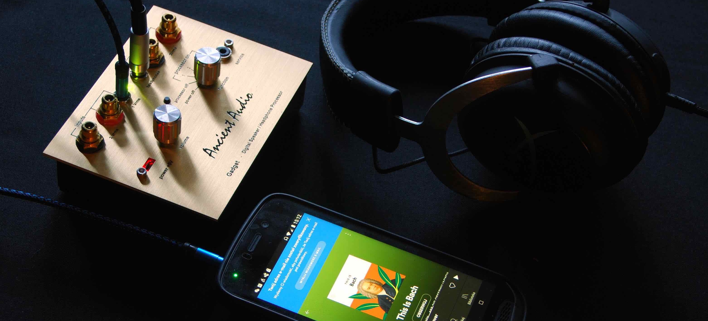

Gadget
Initially, it was designed as follwoing of famous P-1, Golden Analog Awarded processor.
However, after many trials, a new product was designed.
Gadget can be applied to improving sound of speakers and headphone
High quality Burr-Brown A/D and D/A converters, Neutrik RCA sockets , and P-3 I E processor creates high quality device to apply in hi-fi and hi-end systems.
Low level minijack inputs, high quality headphone amplifier makes it easy to connect with any portable sorce, like portable audio players, mobile phones, portable DAC.
Build-in rechargable battery has enough capacity to 10 hour play. Charge is possble by any USB power supply
Small dimensions and compact build makes Gadget ideal for car audio applications.
Device has six programs capacity, so for example it can consists 3 programs for speakers, 2 programs for headphones, 1 program for car